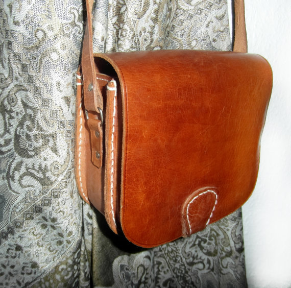

Wenzel Massag
It's our vision of the future that guides our decisions towards itself.
Our present is just the result.
It's our vision of the future that guides our decisions towards itself.
Our present is just the result.
An artifact constructed from detachable modules that allows to recharge electronic devices in a stylish appearance, replenishes it’s power source on its own, is secure and can be located remotely.
I wish my bag charged my phone, tablet, camera, headphones, watch…
A purse/murse/rucksack/bag that looks great, protects it's contents against bumps and falls and has an internal battery and solar panels so all my devices stay charged when they're inside.

Source and copyright Tanja Shpal on: Etsy (http://bit.ly/etsybag).
I imagine it as a single strap bag, inspired by designs like the one above but big enough to hold a small notebook or an iPad. A solar panel in the closing flap and a fairly large battery integrated into a side or the back, strong enough to charge multiple devices.
Often when I travel or just work outside I encounter an empty battery. It affects how I use my devices, so this gap is a regular frustration for me. A bag that incorporates a solar panel and a battery to charge devices can close this gap. Of course I share this problem with many people and given my skills I believe I can build a prototype within eight weeks, because I know electronics well enough to build this myself and I learned to sew leather.